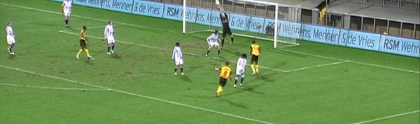
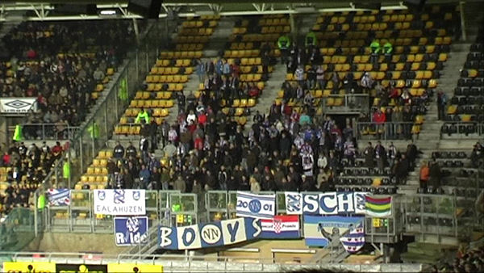
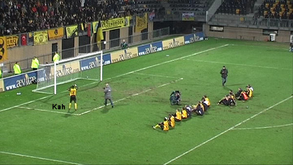

Vanwege een speciale kaartenactie is het stadion ongewoon vol.
In de eerste minuut van de wedstrijd ontspint zich een droomstart als Tioté
doorkopt naar Matondo.

Matondo neemt prachtig aan en via een halve omhaal gaat de bal retour
richting de inlopende Tioté.
Tioté kopt de bal vervolgens over doelman Vandenbussche: 1-0, (1').
Saeijs speelt gevaarlijk terug op Castro die wanneer Pranjic en Sibon
inkomen niks anders kan doen
dan de bal uitschieten.
Schot van Lamah wordt geblokt.
Sibon kopt rakelings naast.
Meeuwis werpt zich voor een knalhard schot van Alves.
Janssen biedt zich aan en wordt bediend door Lamah.
De schitterende volley van Janssen...

... belandt op de vuisten van Vandenbussche.
Speciaal voor de Friezen is het salon-orkest opgegraven uit de catacomben
van Kaalheide.
De Fauw verzendt een bal naar het strafschopgebied. Daar wordt Matondo omver
geduwd. Wegereef ziet
er geen strafschop in.
Ruststand: 1-0.
Lamah schiet voorlangs.
Lamah zet de bal andermaal prima voor. Vandenbussche ligt al gestrekt
waardoor Cissé de bal maar
hoeft binnen te tikken. helaas schiet hij de bal hoog over.
Breuer maakt een grove overtreding op Lamah en krijgt daar rood voor, (60').
De Anderlecht-huurling wordt opgelapt door Norbert.

De meegereisde supporters van SC Heerenveen.
Heerenveentrainer wisselt de onzichtbare Alves alsmede Sibon. Atteveld
reageert met een extra aanvaller:
Oper komt voor Janssen. De wissel is bijna goud waard als Oper hier op het
doel af gaat. Hij schiet
echter in de handen van de keeper.
Bradley heeft in de slotfase nog een gele kaart getoucheerd vanwege zaniken
op de leiding. Maar het
gaat uiteraard om de schitterende achtergrond...
foto: sc-heerenveen.nl
Jan-Paul met wonder-bra.

Kah regisseert de humba.
Grote drukte in de Kickoff.
De spelers die de Kickoff bezochten: Lachambre, Van Tornhout (foto), Matondo
en De Fauw.
Een van de aanwezigen toont zijn tattoos.
Hier zit het koempel-gevoel heel diep.